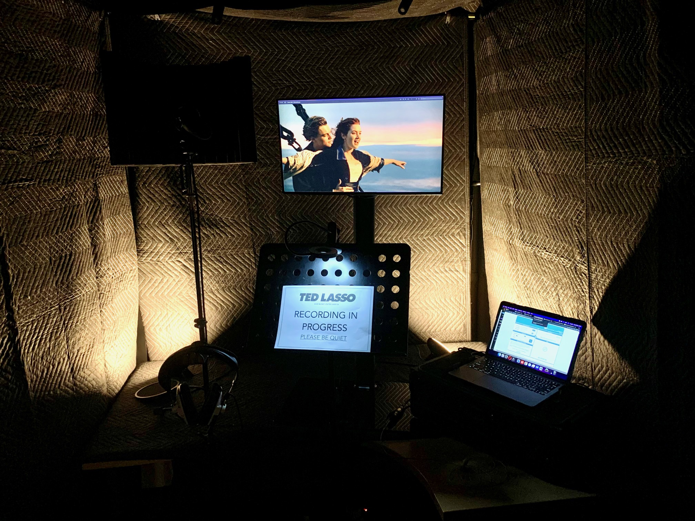

Sound Disposition has 2 well-specified ADR suites in Soho, London,
where we have had the honour of recording ADR and VO for a wide
range of films and episodic drama including
Miniature Gallery of ADR projects in portrait format, clicking on
any takes you through to ADR project portfolio page
We also offer ADR and voice supervision services including spotting,
charting, scheduling and casting
To read more about our range of ADR services click here.

Remote ADR
Sound Disposition was one of the first companies to offer a comprehensive remote ADR offering. The systems we developed during the pandemic have been refined through hundreds of hours of sessions and are now a preferred option for some talent and productions.
Our offering encompasses a range of options for productions where the artist is unable or unwilling to travel to a studio, including setups which travels to the location with an engineer, shippable rigs, and even remote studio configuration.
We are experts at remote connectivity and can stream sessions over virtually any relay method in areas with little or no internet or phone reception. We were the first company to offer ADR via Starlink.
Sound Design
We’re passionate about finding the right sound for the moment - whether it’s creating original sounds using our phenomenal range of software, hardware, microphones, foley props and instruments; or tracklaying sound effects from our vast and ever-growing library.
At Sound Disposition we pay particular attention to the subtle art of supporting the image. Through careful layering of complex atmospheres and also subtle soundscapes (along with the usual bangs, whooshes, explosions and crashes!) we aim to shape the audience’s subconscious appreciation of the narrative through sound design.
We believe every project should have a unique and original sound, and therefore we insist on sourcing our own sounds for each film we work on.
Dialogue Editing
We place the utmost importance in the dialogue edit. It’s potentially the most valuable element of film sound and therefore a great dialogue edit can revolutionise a film’s soundtrack.
rx, izotope, sound disposition, dialogue, editing, edit, marc, specter, kraken, pro tools, We use a cutting-edge set of processes to reduce background noise and improve flow whilst being sensitive to maintain performances. This is done on top of the basic clean-up edit of the production sound. We employ custom software including the top-secret Kraken™ (programmed by Marc Specter) and as a result you’ll have your audio seamlessly transferred into our systems, whatever format you’ve shot or edited in.
We consider ourselves workflow specialists and therefore can conform sessions others can’t!
Mixing
In our custom-built mixing suites we are equipped to mix in virtually any format, including Dolby Atmos, and higher-order ambisonics, as well as 7.1, 5.1 and stereo.
As well as client-attended sessions, we can also offer remote mixing for clients located elsewhere via a number of advanced relay methods. We are also experts at cinema upmixing of content, ensuring your work translates perfectly to the big screen.
Mixing is the culmination of the sound post-production process. It takes the audience by the hand and leads them through the narrative, shaping and sculpting their appreciation of the film.
Foley
Our foley team work in a custom-built foley stage with a plethora of props and surfaces, ready to create any sound you can conceive (and many you can’t)
Foley is an incredibly important part of what we do. It’s one of the many tools we use to fastidiously support the story, and therefore we go to great lengths to ensure that our work is the best it can be.foley
The studio recently welcomed the addition of our new foley room. Fully floated and sound proof, the space contains a range of surfaces for all circumstances. We can create anything from specific pickups to full a foley pass either in-house or using external artists. We possess an extensive range of shoes and clothing along with a wide range of props and devices, and as a result we can create any sound you can imagine!
Immersive, Interactive & VR
Our foley team work in a custom-built foley stage with a plethora of props and surfaces, ready to create any sound you can conceive (and many you can’t)
Foley is an incredibly important part of what we do. It’s one of the many tools we use to fastidiously support the story, and therefore we go to great lengths to ensure that our work is the best it can be.foley
The studio recently welcomed the addition of our new foley room. Fully floated and sound proof, the space contains a range of surfaces for all circumstances. We can create anything from specific pickups to full a foley pass either in-house or using external artists. We possess an extensive range of shoes and clothing along with a wide range of props and devices, and as a result we can create any sound you can imagine!

.svg)

.png)